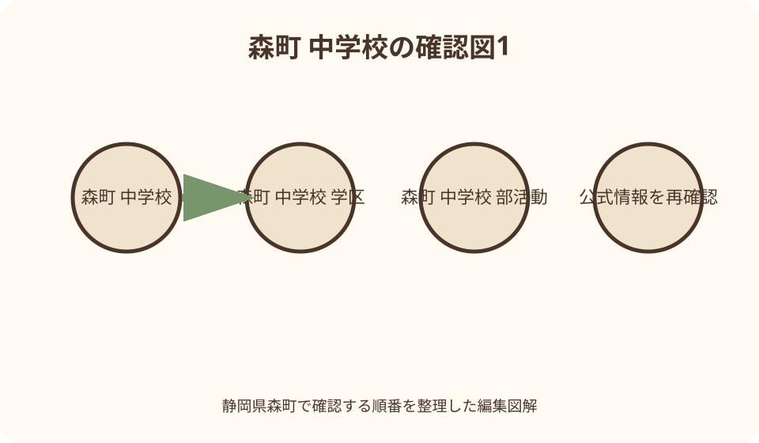
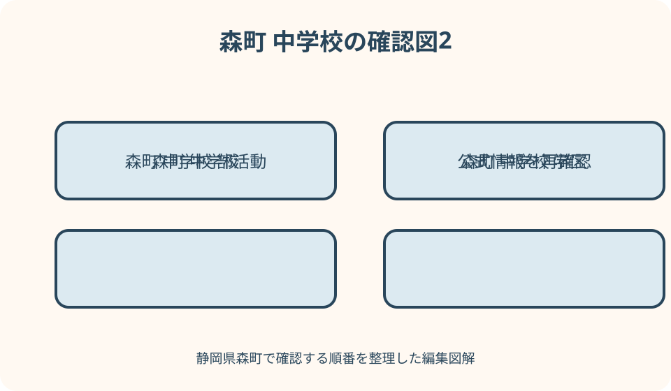

子育て・学校｜最終確認 2026-08-10
静岡県森町の中学校・通学区域確認ガイド｜転入・部活動後の帰路・防災
静岡県森町の町立中学校は、町公式の現行一覧では森中学校と旭が丘中学校の2校です。住所に基づく指定校は森町立小中学校児童生徒の通学学校指定規則で決まるため、小学校から自動的に特定校へ進むと推測せず、番地と入学・転入日を学校教育課（0538-85-1112）へ伝えてください。旧泉陽中学校は2020年3月末に閉校し森中学校へ統合されています。北部からのバス、部活動や地域クラブ終了後の交通、指定校変更、災害時引渡しは別々の条件があるため、契約前・進学前に年度資料を確認します。
現行二校を確かめる——閉校した泉陽中学校を除く
森町公式の学校一覧は、町立中学校を森中学校と旭が丘中学校の二校としています。森中学校は森町天宮八八八番地の一、旭が丘中学校は森町谷中五五六番地にあり、所在地と指定区域は同義ではありません。
泉陽中学校は二〇二〇年三月末に閉校し、同年四月に森中学校へ統合されました。検索結果、古い学校概要、防災施設、跡地活用の記事に泉陽中学校の名称が残っても、現在の第三の就学先とは数えません。
学校ホームページには予定や活動が掲載されますが、過年度の部活動名、下校時刻、校則を将来年度へ固定しません。進学年度の入学説明会、学校通知、教育委員会の現行案内を優先します。
本記事は二〇二六年八月十日に森町公式ページを確認しています。二校体制、区域、地域クラブ移行は変更の可能性があるため、子どもが実際に入学する年度と住所を添えて再確認します。
住所と通学区域を照合する——番地と就学日を伝える
森町の就学先は、森町立小中学校児童生徒の通学学校指定規則に基づき住所から指定されます。町内の地区名、郵便番号、最寄り駅だけでは境界を決めず、枝番と集合住宅名まで用意します。
現在通う小学校名から進学先を予想できる場合でも、転居、区域変更、指定校変更の経過措置があり得ます。六年生の秋までに、入学時点の住所を学校教育課へ伝えて正式な扱いを確認します。
物件広告に記載された学区、地図サイトの境界、近隣住民の話は参考資料です。教育委員会が現行規則に照らした回答と異なる場合は、契約前に不一致の理由を確かめます。
照会記録には住所、子どもの生年月日、現在校、入学・転入予定日、回答日、指定校、必要手続を書きます。物件変更や入居延期が生じたら、古い記録へ新住所を上書きせず新たに照会します。
二校を順位付けしない——学校情報と住宅判断を切り離す
森中学校と旭が丘中学校の児童生徒数、進路、行事、施設を見ても、単純な学校評価へ変換しません。公開値は年度で変わり、一人の生徒の学びや人間関係を予測する点数ではありません。
学区を住宅価格や資産価値の根拠として扱うと、再編や区域変更があった時に前提が崩れます。この記事では不動産の優劣を論じず、指定手続と日常の通学が成立するかを扱います。
学校公開や説明会へ参加する時は、教育内容だけでなく連絡方法、定期テスト、端末、給食、部活動、相談体制を質問します。校内を許可なく撮影し、生徒の様子を口コミへ投稿しません。
配慮が必要な生徒は、学校名の評判を比べる前に、現在の支援内容、医療・福祉との連携、教室移動、通学手段を教育委員会へ伝えます。個別対応の可否は面談で確認します。

小学校六年から準備する——通知と説明会を年度で追う
町公式の入学案内は、小中学校の入学通知書を一月末までに保護者へ送付するとしています。住所変更、通知未着、氏名相違、町外進学の予定があれば、封筒を待ち続けず学校教育課へ連絡します。
入学説明会では、制服、体操服、通学靴、かばん、自転車、給食、端末、入学式の提出物を確認します。先輩から譲り受けた用品は、現行仕様と安全基準に合うか学校へ尋ねます。
部活動の希望だけで入学準備を固定しません。二〇二六年度から地域展開が進んでおり、学校部活動と地域クラブで運営、会場、費用、保険、送迎が異なるためです。
小学校で受けていた学習・生活上の配慮は、保護者、両校、教育委員会で引継ぎ方法を確認します。口頭の申し送りだけにせず、共有範囲、面談日、入学後の見直し時期を決めます。
転入する順番——前校の書類を三つの窓口へつなぐ
町外から森町へ移る場合は、住民生活課で転入届を行い、その後に教育委員会で転入学通知書を受け取り、指定された中学校へ提出する順序が町公式に示されています。
前の中学校からは在学証明書と教科書無償給与証明書を受け取ります。成績、健康、支援、部活動等の引継ぎが別送されることもあるため、保護者が開封・転送してよい書類か確認します。
転校初日は、学級、時間割、給食、制服の暫定対応、端末、通学方法、欠席連絡を学校と決めます。住民異動した翌朝から準備なしで登校できるとは考えません。
事前相談で指定校の見込みを聞けても、正式な転入学通知が発行された状態とは別です。住宅契約や勤務先への説明では、相談中、通知待ち、学校受入準備済みの段階を分けます。
学期途中の転校——学習・評価・行事の切れ目を調整する
中学校の学期途中転校では、定期テスト、評定、進路資料、実技教科、行事、部活動大会が重なることがあります。転校日だけでなく、前校と新校が成績資料を受け渡す時期を確認します。
教科書が同じでも副教材、進度、端末アカウント、提出物は異なる可能性があります。未履修と重複を本人の努力だけに任せず、担任や教科担当へ調整方法を相談します。
中学三年の転校は、進路面談、調査書、出願、学区外受験等の日程へ影響します。志望校の結論をこの記事で出さず、前校、新校、必要に応じて進学先担当へ期限を照会します。
前の学校で所属した部活動の大会登録や用具は、新校へ自動移行するとは限りません。退部・入部手続、登録期限、返却物、保険を確認し、試合出場を保証されたと受け取りません。

指定校変更を相談する——中三と学期途中の基準を見る
森町は指定校変更の申立て基準を公開していますが、二校から自由に選択できる制度ではありません。該当事由、許可期間、添付書面を確認し、転居前に学校教育課へ相談します。
学期途中の町内転居は学期終了まで、最終学年である中学三年時の町内転居は卒業までという基準があります。始業日前の転居は学期途中の基準外と明記されている点にも注意します。
六か月以内に完成入居予定の町内新築は、新居へ移るまでの変更基準があり、契約書写し等を求める案内です。工期や引渡しがずれた場合の再確認も必要です。
生徒指導上の配慮やその他相当理由では、校長の副申書等を添える場合があります。家庭の希望だけで該当を宣言せず、現在校、指定校、教育委員会との情報共有方法を確認します。
許可後の通学を組む——保護者送迎を三年間で考える
指定校変更が認められても、校外からの通学手段まで町が用意するとは限りません。路線バス、自転車、徒歩、保護者送迎の可否と責任を、許可期間全体で検討します。
朝の送迎だけでなく、部活動、地域クラブ、テスト期間、早退、警報、保護者の残業時を曜日別に置きます。一時的に可能な車送迎を三年間続けられる前提へ変えません。
きょうだいが同じ変更を受けられるか、次年度の更新が必要か、住所変更時に失効するかを確認します。一人の許可通知の条件を家族全員へ広げません。
変更が認められない場合は、指定校で必要な支援が受けられるかを同時に相談します。希望校への通学だけを唯一の解決策とせず、安全、学習、人間関係の困りごとを具体化します。
徒歩・自転車通学を試す——夕方の視認性まで測る
中学生は小学生より行動範囲が広くても、地図の最短経路を自由に選べるとは限りません。学校指定の通学路、自転車許可区域、ヘルメット、反射材、雨天時の規則を確認します。
自転車経路は登校時だけでなく、部活動終了後の薄暮や冬の暗さで試走します。坂、側溝、狭い橋、右折、車の抜け道、街灯、店舗閉店後の人通りを地点ごとに記録します。
自転車通学の許可距離、点検、保険、車種、荷台、雨具、修理中の代替は学校へ尋ねます。兄姉が許可された住所でも、年度や本人の状況を確認せず同じ扱いとしません。
徒歩と自転車を日によって変える場合、学校への届出、駐輪、途中合流を確認します。雨天の車送迎は校門周辺の混雑を生むため、指定された乗降場所と進入方向を守ります。
北部のバス通学——統合時ダイヤを現行表にしない
泉陽中学校と森中学校の統合準備会では、北部地域からのバス、停留所、横断歩道、通学費補助が検討されました。しかし二〇一九・二〇二〇年資料は現在の時刻表ではありません。
対象住所、利用申請、停留所、登校便、下校便、費用補助、乗車証は、入学年度に学校教育課へ確認します。旧泉陽中学校区という呼称だけで利用資格が確定するとは言えません。
学校行事、定期テスト、部活動なしの日、警報、遅延では便が変わる可能性があります。定期便に乗れない場合の待機場所、連絡先、保護者迎えを年度案内で確かめます。
バス停までの移動も通学です。山間部の暗さ、土砂、倒木、河川、野生動物、通信圏を家庭で確認し、危険時に無理に停留所へ向かわず学校の連絡指示に従います。
学校部活動を確認する——種目一覧を固定しない
入学年度に学校部活動として何があるかは、各中学校の説明会と最新資料で確認します。過年度の大会結果や写真に種目があっても、募集、顧問、人数、合同活動が継続する保証はありません。
見学や仮入部では、平日・休日の活動日、終了時刻、会場、用具、費用、大会、欠席連絡、保護者当番を質問します。強さや実績だけで三年間の生活を決めません。
入部は学校への就学指定とは別です。指定校に希望種目がないことだけで学校変更が認められると考えず、地域クラブ、町外の民間クラブ、別種目も条件付きで比較します。
けが、持病、学習、家庭事情がある生徒は、活動量や配慮を顧問へ伝えます。参加すれば健康になる、競技経験が進学に有利になるといった結果を記事側で約束しません。
地域クラブ移行を読む——令和8年から10年を更新する
森町公式は、令和八年度から令和十年度にかけ、学校部活動を段階的に地域クラブ活動へ移す計画を掲載しています。中体連や近隣自治体の状況により見直す可能性も明記されています。
現行案内では、令和八年夏大会後に野球の休日活動を先行移行し、令和九年夏大会後に他種目の休日活動を順次移行、令和十年四月に平日活動も移す予定です。申込時に再確認します。
地域クラブは学校主体の部活動とは異なり、地域団体等が運営し、会費、保険、会場、大会参加判断がクラブごとに設定されます。学校へ入学すれば自動加入できる仕組みとは限りません。
二〇二六年九月以降の受け皿は種目ごとに整備状況が異なり、町外クラブや種目変更が代案になる可能性も公式が示しています。希望種目の確実な継続を住宅選択へ織り込みません。
部活動・地域クラブ後の帰路——会場ごとに迎えを決める
学校部活動の終了後は校門、地域クラブは総合体育館、文化会館等の別会場になる場合があります。活動名だけで帰路を決めず、曜日、会場、終了時刻、解散場所を予定表へ入れます。
路線・通学バスが活動終了時刻に接続するか、最終便、乗換え、停留所から自宅までの暗さを確認します。登校便があることを夕方の帰宅便の保証と捉えません。
保護者送迎では、会場の駐車、待機、乗降、遅延連絡を確認します。校門前や文化会館周辺へ一斉に車が集まる時間を想定し、路上停車や近隣店舗への無断駐車を避けます。
終了が延びた、けがをした、迎え手と連絡できない場合に、生徒が待つ場所と連絡先を決めます。本人のスマートフォン所持だけを安全策にせず、運営者側の緊急連絡方法も確認します。
大会・休日活動——学校外移動と費用を別に見る
大会や練習試合は町外会場になることがあり、集合時刻、移動主体、交通費、弁当、用具運搬、解散が平日と異なります。保護者配車を当然の義務とせず、運営者の案内を読みます。
地域クラブが大会へ参加できるかは、中体連や競技団体の規程とクラブの判断によります。地域クラブへ入れば学校代表として全大会に出られる、という説明はしません。
会費のほか、保険、登録、大会、ユニフォーム、用具、交通の負担があり得ます。無料の実証期間と本格運営後の費用を混ぜず、対象年度のクラブ募集要項を確認します。
休日活動と家族行事、学習、休養が重なる場合の欠席連絡や選択を本人と話します。参加回数だけで意欲を評価せず、学校とクラブの双方へ無理のない活動計画を相談します。
防災と引渡し——在校中・移動中・クラブ中を分ける
森中学校と旭が丘中学校は町指定避難所一覧にも載っていますが、授業中の生徒引渡しと地域避難所の開設は同じ手続ではありません。学校の危機対応と町の開設情報を別に確認します。
登下校中に地震、大雨、雷、土砂災害が起きた場合、学校へ戻る、自宅へ進む、近い安全施設へ入る判断を家庭で練習します。災害種別によって安全な方向が変わります。
地域クラブ中は、学校ではなく運営団体と会場の避難・引渡しルールが適用される場合があります。登録保護者、緊急連絡、会場閉鎖時の迎えを申込時に確かめます。
森町地域防災計画は二〇二六年三月改定が公表されています。自宅、二校、バス停、活動会場をハザードマップで重ね、通常帰路と使わない経路を家族で共有します。
旧泉陽中学校と再編資料——歴史と将来予定を分離する
泉陽中学校は森中学校へ統合され、跡地は別の利活用契約が公表されています。跡地に教育関連施設があっても、町立中学校として再開したことを意味しません。
統合準備会の記録は、バスや用品、教育、PTAの検討経緯を知る一次資料です。一方、当時の時刻、補助、部活動を現在の生徒へそのまま適用する根拠にはなりません。
古い答申には将来的な一校再編等の検討が含まれる場合がありますが、検討案と決定済み計画を分けます。具体的な年度、校舎、区域が現行発表にないなら未決定として扱います。
入学が数年先の家庭は、学校教育課へ現行二校、決定済みの変更、説明会予定を尋ねます。うわさの再編年度を前提に物件や通学手段を選ばず、毎年度確認を更新します。
相談先を分ける——就学、クラブ、道路、防災を一件ずつ
指定校、転入学通知、指定校変更、学校生活は学校教育課へ相談します。社会教育課は地域クラブの認定・展開情報を扱うため、同じ電話番号表示でも担当内容を最初に伝えます。
通学路の道路施設や交通安全は建設・交通安全の担当、災害情報は危機管理、路線バスは運行主体等へ確認が必要です。学校が全ての道路工事や運行を決めるとは限りません。
問い合わせでは、生徒の学年、住所、学校、曜日、時刻、徒歩・自転車・バス、部活動または地域クラブを伝えます。「帰れますか」だけでなく、どの便・どの経路が不明かを示します。
回答は担当、確認日、有効年度、次の連絡先へ分けて記録します。個人情報や健康情報を一般メールへ添付せず、町や学校が指定する安全な方法で提出します。
良い点——二校と地域クラブの現行情報へ到達できる
森町の良い点は、現行二校の住所・連絡先、転入・指定校変更、泉陽中学校統合の経緯を公式ページで確認できることです。古い三校資料を見分ける基準が作れます。
地域クラブへの移行時期、学校部活動との違い、運営、保険、費用、大会の考え方も公表されています。希望種目だけでなく、帰宅と家計を入学前に検討できます。
統合準備資料にはバス利用や通学費補助の検討記録があり、北部居住者が現在の運用を尋ねる論点を拾えます。過去資料を現在値にせず、質問表として活用できます。
指定避難所と地域防災計画も同じ町サイトで参照でき、学校、バス停、活動会場の安全を一枚の地図で考えられます。ただし個別の通学許可は担当確認が必要です。
注文したい点——部活動名と学区だけで住宅を決めない
注文したい点は、希望部活動が現在あることを、入学後三年間の継続保証にしないことです。令和八年から十年の地域展開で、運営、会場、曜日、費用、送迎が変わり得ます。
学区情報も「森地区なら森中」のような推測で止めず、番地と入学日を教育委員会へ伝えます。小学校の在籍だけで中学校指定が自動確定すると考えません。
学校の進学実績、口コミ、児童生徒数を住宅価格や優劣へ結び付けません。家庭が確認できるのは、現行指定、通学安全、支援、活動後の帰路という具体的な条件です。
バス、指定校変更、地域クラブは、それぞれ審査、対象、申込、定員があり得ます。利用できるか未確認の制度を三つ重ねて、確実に通える生活計画として扱いません。
対案・結論——平日一週間の帰宅表から確認する
結論として、候補住所、指定校、登校手段、通常下校、学校部活動後、地域クラブ後、警報時の七欄を作ります。月曜から金曜まで、帰宅便と迎え手を具体的に入れます。
次に学校教育課へ指定区域、転入順序、変更基準、バス対象を照会し、社会教育課へ希望する地域クラブの年度情報を尋ねます。二つの担当回答を一つの確約へまとめません。
徒歩・自転車・バスの経路は明るい登校時だけでなく、冬の活動終了時に試します。災害時は学校、移動中、クラブ会場の三場面に分け、引渡し相手と待機場所を確認します。
再編やクラブ移行が未決定なら、未決定を表へ残します。希望活動が変わっても現行指定校へ安全に通えることを基礎にし、毎年度の公式発表で表を更新します。
大石の視点——中学校選びは午後六時の帰路で考える
大石の視点では、中学校生活は朝の校門だけでなく午後六時前後の帰路で見ます。部活動や地域クラブが終わった時、暗い道、バス、迎え、連絡手段がつながるかが日常の継続性を決めます。
森町の二校体制は分かりやすく見えても、旧泉陽中学校区からのバス、指定校変更、校外会場の活動があります。校名だけで生活圏を説明せず、曜日と時刻へ分解します。
地域展開は選択肢を広げる一方、会費や保険、送迎、会場の確認を家庭へ増やします。制度への賛否を先に決めるより、子どもが希望する活動の現行募集要項を読む方が実務的です。
学校を評判や不動産価値の記号にせず、住所の正式確認、安全な移動、困った時の相談先で選択を支えます。この三点を記録に残せば、転校や年度変更にも落ち着いて対応できます。
公式情報・確認先
掲載内容は次の一次情報を基礎に整理しました。営業、料金、催し、交通は変わるため、出発前または手続き前にリンク先で最新情報を確認してください。
- 小学校・中学校一覧（静岡県森町、2026-08-10確認）
- 入学・転入・指定校変更（静岡県森町、2026-08-10確認）
- 移住定住手続き・公立学校転入（静岡県森町、2026-08-10確認）
- 転出届・転校手続（静岡県森町、2026-08-10確認）
- 泉陽中学校・森中学校統合準備会（静岡県森町、2026-08-10確認）
- 中学校部活動の地域展開（静岡県森町、2026-08-10確認）
- 森町地域クラブ認定制度（静岡県森町、2026-08-10確認）
- Mori・Asahiクラブ令和8年度（静岡県森町、2026-08-10確認）
- 町指定避難所等（静岡県森町、2026-08-10確認）
- 森町地域防災計画（静岡県森町、2026-08-10確認）